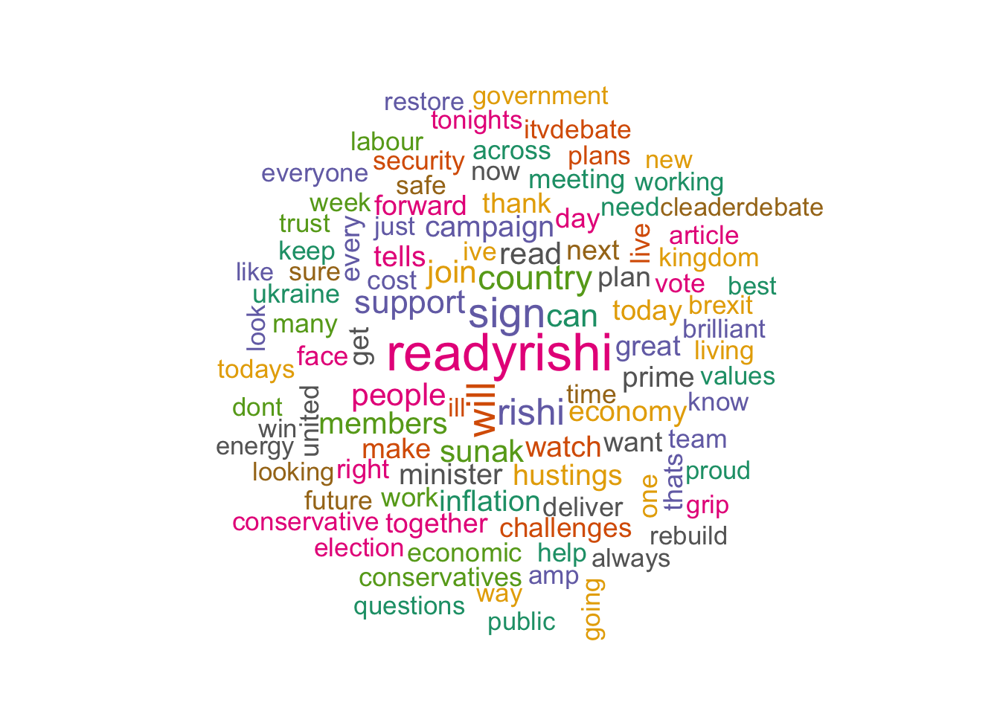
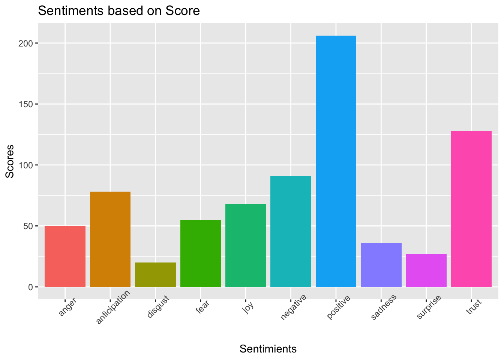

This lab sheet explains a few lines of the codes available in the blog of Saúl Buentello. Link.
Detailed discussions have been done practically in the lab.
# following library helps downloading and analyzing Twitter data
library(rtweet)
app_name <- 'Your app name'
api_key <- 'Your app key'
api_secret_key <- 'Yoiur api secret key'
access_token <- 'Your access token'
access_secret <- 'Your acess secret'To get the above keys go to https://developer.twitter.com/en and sign up. After signing in you will be awarded a free essential account. Then fill the necessary form in https://developer.twitter.com/en/portal/products to get an elevated account.
Now create an app here: https://developer.twitter.com/en/portal/projects-and-apps
# create the token
twitter_token <- create_token(app = app_name,consumer_key = api_key,
consumer_secret = api_secret_key,
access_token = access_token,
access_secret = access_secret)## Download tweets from timeline
# tweets_t20wc<-search_tweets(q = "#t20worldcup",
# n = 4000,
# include_rts = T, lang="es")
tweetsTimeline = get_timeline(user = "@RishiSunak", n = 400, lang="en",
include_rts = T)library(dplyr)
library(magrittr)# or library(dplyr) for the function "%>%"
CleanedTweets <- tweetsTimeline %>%
filter(is_retweet==F, is.na(reply_to_status_id))library(tm)
text <- CleanedTweets$text
# use corpus
text_corpus <- Corpus(VectorSource(text))
# clean the tweets
text_corpus <- text_corpus %>%
tm_map(content_transformer(function(x) gsub("https\\S*", "", x, perl=T))) %>%
tm_map(removeNumbers) %>%
tm_map(removePunctuation,ucp=T) %>%
tm_map(stripWhitespace)%>%
tm_map(content_transformer(tolower)) %>%
tm_map(removeWords, stopwords("english")) %>%
tm_map(content_transformer(function(x) gsub("[^\x01-\x7F]", "",x)))dtm <- TermDocumentMatrix(text_corpus)
matrix <- as.matrix(dtm)
words <- sort(rowSums(matrix),decreasing=TRUE)
df <- data.frame(word = names(words),freq=words)library(wordcloud)
library(RColorBrewer) # for colors
set.seed(1234)
wordcloud(words = df$word, freq = df$freq, min.freq = 5, max.words = 100, scale = c(2.2,1), colors=brewer.pal(8, "Dark2"), random.color = T, random.order = F)
library(syuzhet)
tweetSentimentNRC = get_nrc_sentiment(df$word)
tweetSentimentNRC = cbind(df, tweetSentimentNRC)
tweetSentimentNRC %>%
filter(rowSums(tweetSentimentNRC[,-c(1,2)]) > 0) %>%
head()## word freq anger anticipation disgust fear joy sadness surprise
## join join 33 0 0 0 0 0 0 0
## economy economy 23 0 0 0 0 0 0 0
## watch watch 23 0 1 0 1 0 0 0
## inflation inflation 23 0 0 0 1 0 0 0
## prime prime 19 0 0 0 0 0 0 0
## plan plan 18 0 1 0 0 0 0 0
## trust negative positive
## join 0 0 1
## economy 1 0 0
## watch 0 0 0
## inflation 0 1 0
## prime 0 0 1
## plan 0 0 0sentimentScores = data.frame(colSums(tweetSentimentNRC %>%
select(-word,-freq)))
names(sentimentScores) = "Score"
sentimentScores = cbind("sentiment"= rownames(sentimentScores), sentimentScores)library(ggplot2)
ggplot(data=sentimentScores,aes(x=sentiment,y=Score))+
geom_bar(aes(fill=sentiment),stat = "identity")+
xlab("Sentimients")+ylab("Scores")+
ggtitle("Sentiments based on Score")+
theme(axis.text.x = element_text(angle=45),
legend.position = "none")
Copyright © 2022 Biswarup Biswas. All rights reserved.